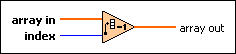

Decrement Array Element VI
Owning Palette: Array VIs and Functions
Requires: Base Development System
Subtracts 1 from the specified element of a 1D array. If the array is an array of timestamps, this VI decrements the element by one second.

 Add to the block diagram Add to the block diagram |
 Find on the palette Find on the palette |